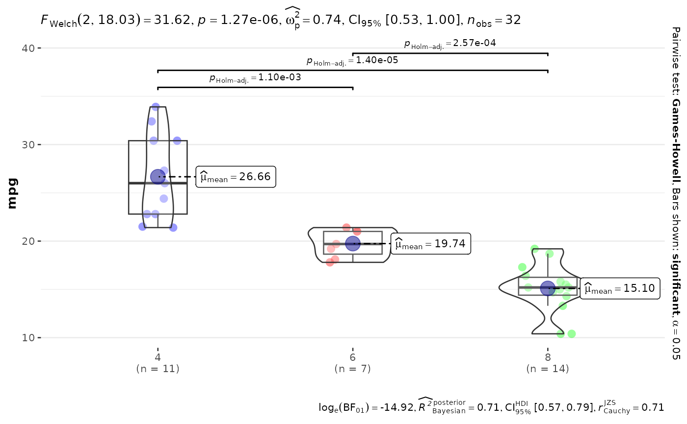

Analyze one dependent variable and produce everything a paper needs
Source:R/pipeline.R
analyze_and_report.RdOne-call pipeline for a single dependent variable: checks the assumptions
(producing a ready-made methods sentence via assumption_methods_text()),
builds the matching ggstatsplot figure with automatic
parametric/non-parametric selection, reports the omnibus test via
reportggstatsplot(), and – for more than two groups – reports the
significant post-hoc comparisons via reportggstatsplotPostHoc().
Usage
analyze_and_report(
data,
dv,
iv,
design = c("between", "within"),
ylab = dv,
xlabels = NULL,
plotType = "boxviolin",
sink_to = NULL
)Arguments
- data
the data frame
- dv
the dependent variable (column name as string)
- iv
the independent variable (column name as string); coerced to a factor if it is not one already
- design
"between"for between-subjects data (default) or"within"for repeated measures- ylab
label for the dependent variable; defaults to
dv- xlabels
optional labels for the x-axis
- plotType
either "box", "violin", or "boxviolin" (default)
- sink_to
optional path of a
.texfile; the methods sentence, omnibus result, and post-hoc sentences are written there so a manuscript can\input{}them
Value
Invisibly returns a list with components plot (the ggplot),
methods (assumption-check sentence), text (omnibus result),
posthoc (post-hoc sentences, or NULL for two groups), and
sentences (all text combined, in manuscript order).
Examples
# \donttest{
result <- analyze_and_report(mtcars, dv = "mpg", iv = "cyl")
#> Shapiro--Wilk tests indicated no significant deviation from normality in any group (all $p \geq 0.05$); therefore, parametric tests were used. Levene's test indicated unequal variances ($F(2, 29) = 5.51$, $p = 0.009$); Welch-corrected statistics were used where applicable.
#> An One-way analysis of means (not assuming equal variances) found a significant effect of \cyl on mpg (\F{2}{18.03}{31.62}, \pminor{0.001}, $\omega^{2}$ = 0.74).
#> A Games-Howell post-hoc test found that 4 was significantly higher (\m{26.66}, \sd{4.51}) in terms of \mpg compared to 6 (\m{19.74}, \sd{1.45}; \padj{0.001}).
#> A Games-Howell post-hoc test found that 4 was significantly higher (\m{26.66}, \sd{4.51}) in terms of \mpg compared to 8 (\m{15.10}, \sd{2.56}; \padjminor{0.001}).
#> A Games-Howell post-hoc test found that 6 was significantly higher (\m{19.74}, \sd{1.45}) in terms of \mpg compared to 8 (\m{15.10}, \sd{2.56}; \padjminor{0.001}).
result$plot

# }